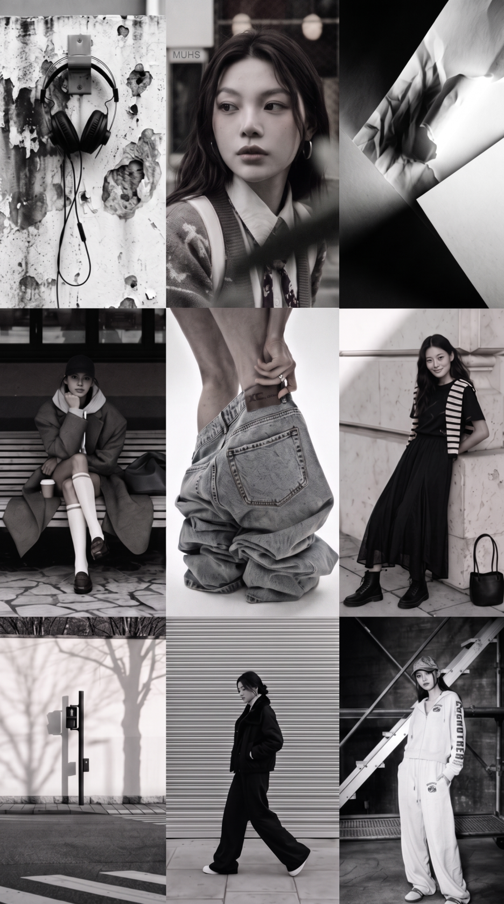
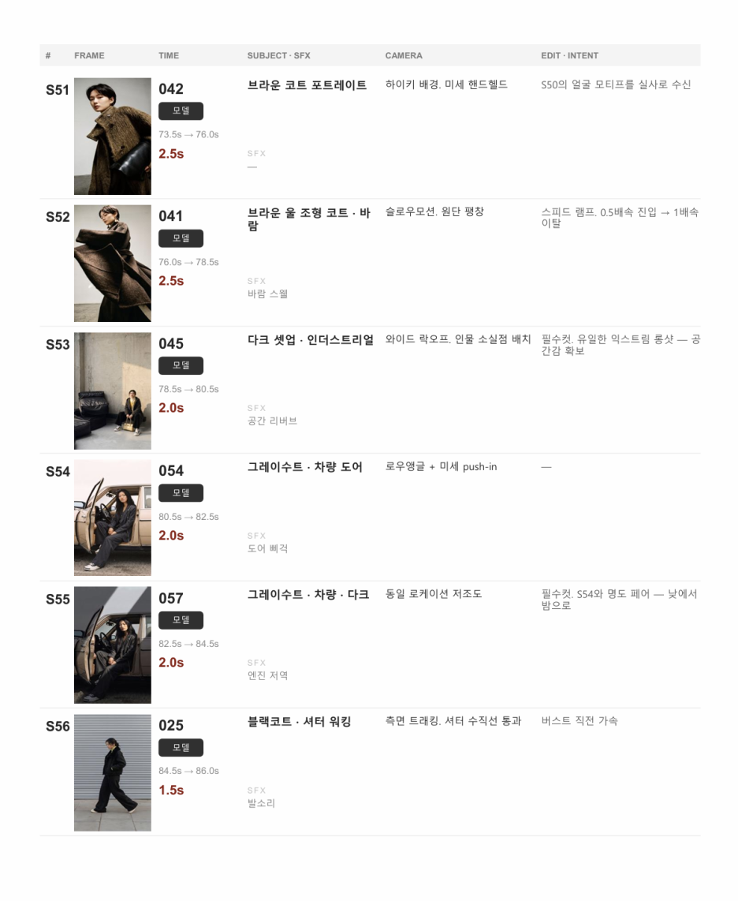
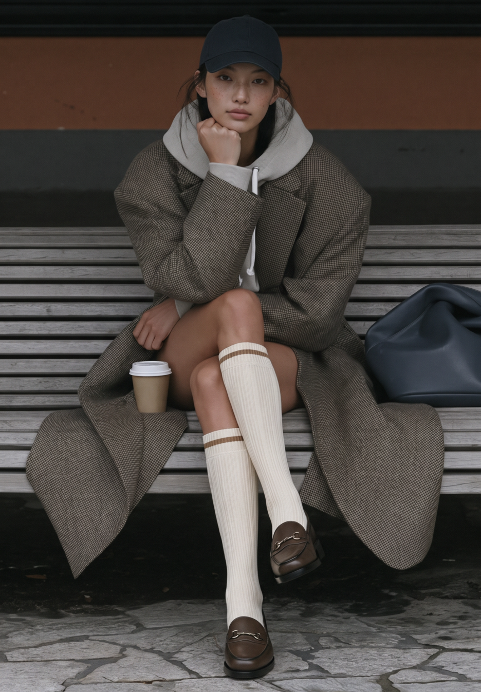
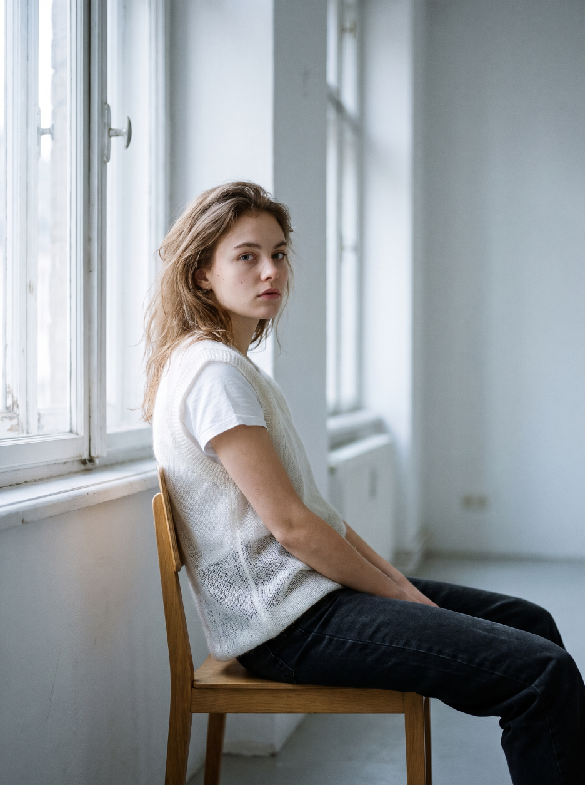
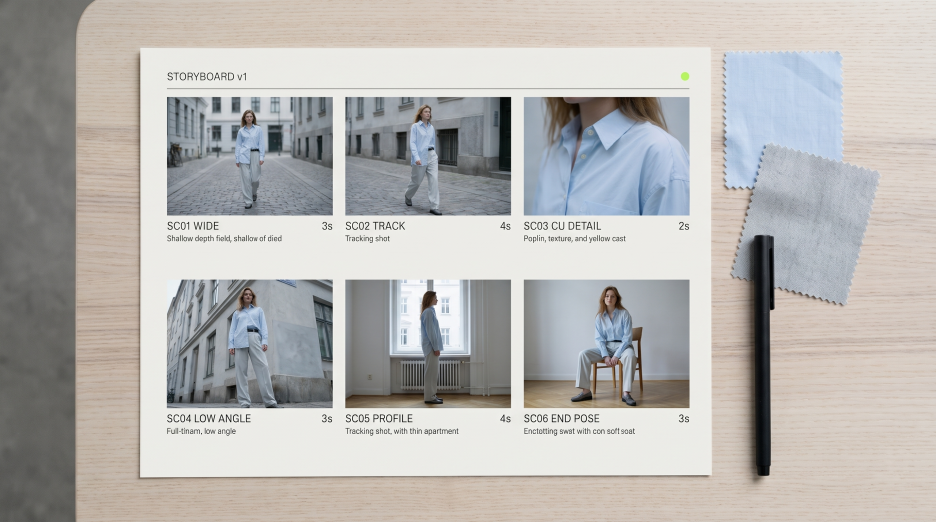
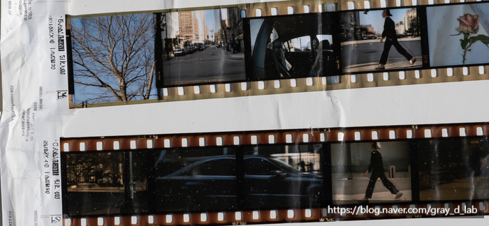

PRODUCTION JOURNAL
AI 패션 영상은 어떻게 만들어질까? 디렉터가 답한 제작 과정 5단계

"AI로 브랜드 캠페인 영상을 만들고 싶은데, 뭘 얼마나 준비해야 하나요?"
"AI 모델은 어떻게 정하고, 완성 전에 중간 결과를 볼 수 있나요?"
AI 패션 영상이나 AI 광고 영상을 처음 맡길 때 가장 많이 묻는 질문입니다. AI 영상 제작 업체를 고를 때는 결과물만큼 '어떤 과정으로 만들어지는가'도 중요합니다. GRaY D. Lab이 실제 제작 경험을 바탕으로 제작 과정을 소개합니다.
먼저 결론부터 말씀드리면, 완성된 기획안이나 전문적인 제작 자료는 필요하지 않습니다. 무엇을 보여주고 싶은지, 어디에 사용할 영상인지 알려주시면 브랜드 분석과 기획은 제작사가 맡습니다. 실제 판매 제품을 보여주는 영상이라면 제품 사진이 필요하며, 어떤 사진이 필요한지는 보유하신 자료를 검토한 뒤 안내드립니다.
AI 패션 영상 제작은 옷 한 벌이 만들어지는 과정과 닮아 있습니다.
치수 재기 → 디자인 스케치 → 패턴·샘플 가봉 → 본 생산 → 마감·출고
치수를 재지 않고 옷을 짓지 않듯, 브랜드를 이해하지 않고 기획하지 않습니다. 스케치 없이 패턴을 뜨지 않듯, 장면의 방향을 정하지 않고 영상을 생성하지 않습니다.
한눈에 보는 AI 패션 영상 제작 과정
표 1. AI 패션 영상 제작 과정 5단계
| 단계 | GRaY D. Lab의 작업 | 고객이 준비·확인할 내용 |
|---|---|---|
| ① 상담·브랜드 분석 | 브랜드의 시장 포지셔닝과 타깃 고객을 분석하고, 제작 방향·범위·견적·일정을 제안합니다. | 영상 목적, 사용처, 희망 일정·예산, 캠페인의 주요 요구사항을 전달합니다. |
| ② 기획·스토리보드 | 브랜드에 맞는 이야기와 장면을 구성하고, 카메라 앵글·움직임·전환을 설계합니다. | 콘셉트와 장면 흐름이 의도에 맞는지, 꼭 보여줄 요소가 포함됐는지 확인합니다. |
| ③ 모델·착장 기준 설정 | 제품 자료를 검토하고, 인물과 의상의 기준 이미지를 제작합니다. | 보유한 제품 사진을 제공하고, 모델의 인상과 의상 실루엣·주요 디테일을 확인합니다. |
| ④ 키이미지·영상 제작 | 장면별 기준 이미지를 만든 뒤 움직임을 더하고, 일관성과 자연스러움을 검토합니다. | 사전에 협의한 확인 단계에 따라 키이미지와 영상 시안에 대한 의견을 전달합니다. |
| ⑤ 편집·최종 납품 | 컷 연결·색감·사운드 등을 다듬고, 협의한 송출 규격에 맞춰 파일을 전달합니다. | 필요한 로고와 송출 사양을 제공하고, 최종 편집본을 확인합니다. |
※ 기획부터 의뢰하는 경우의 기본 흐름입니다. 기획안이나 스토리보드가 준비돼 있다면 필요한 단계부터 협의할 수 있습니다.
Q1. 의뢰하면 가장 먼저 무엇을 하나요?
"브랜드가 시장에서 어떤 위치에 있고, 누구에게 어떤 가치를 전달하려는지부터 살펴봅니다.
옷을 지을 때 치수를 재는 것처럼, 영상도 먼저 그 브랜드에 맞는 기준을 잡아야 합니다.
첫 상담은 두 가지 질문으로 시작합니다. 무엇을 보여주고 싶은지, 어디에 쓸 영상인지. 이후 희망 일정과 예산 범위, 필요한 제품 자료를 확인합니다.
그리고 브랜드의 홈페이지와 SNS, 상품 구성과 가격대, 기존 캠페인 등을 살펴봅니다. 이때 저는 패션 디자인 디렉터로 일해 온 경험을 바탕으로, MD와 상품 기획의 관점에서도 브랜드를 분석합니다.
시장에서 어떤 포지션을 차지하고 있는지, 어떤 고객층을 지향하는지, 브랜드의 콘셉트와 차별점은 무엇인지를 함께 보는 것입니다.
그 분석은 실제 제작 선택으로 이어집니다. 어떤 인상의 모델이 브랜드에 어울리는지, 의상을 어떤 태도와 움직임으로 보여줄지, 어떤 공간과 색감이 적합할지 판단하는 기준이 됩니다. 영상의 무드뿐 아니라 장면을 어떤 이야기와 흐름으로 연결할지, 즉 내러티브도 여기서 방향을 잡습니다.
같은 코트라도 브랜드가 강조하려는 것이 소재와 품질인지, 실용적인 라이프스타일인지, 개성 있는 스타일링인지에 따라 모델과 연출은 달라질 수 있습니다.
고객께서 별도의 브랜드 분석 자료를 새로 만드실 필요는 없습니다. 제가 먼저 리서치하고, 공개된 자료만으로 알기 어려운 이번 캠페인의 목표나 꼭 지켜야 할 사항을 여쭤봅니다. 기존 브랜드 소개서나 시즌 콘셉트 자료가 있다면 함께 참고합니다.
이렇게 파악한 브랜드의 방향을 모델 선정과 영상의 분위기, 이야기 구성에 반영합니다."
· 고객이 하실 일: 영상의 목적·사용처·희망 일정 공유, 이번 캠페인의 주요 요구사항 전달
· GRaY D. Lab이 하는 일: 시장 포지셔닝·타깃 고객·콘셉트·차별점 리서치, 모델과 영상 연출 방향 설정, 제작 범위·견적·일정 제안
Q2. 스토리보드는 누가, 어떻게 만드나요?
"기획부터 맡겨주시는 경우 저희가 만듭니다. 옷으로 치면 디자인 스케치 단계입니다.
앞서 분석한 브랜드의 포지셔닝과 고객층, 콘셉트를 바탕으로 영상의 내러티브와 장면을 구성합니다. 착장을 순서대로 나열하는 데 그치지 않고, 인물과 공간, 움직임이 어떤 흐름으로 브랜드의 분위기를 전달할지 설계합니다.
이때 카메라의 앵글과 움직임도 함께 정합니다. 예를 들어 아래에서 올려다보는 로우 앵글은 당당한 인상을 줄 수 있고, 인물 주위를 도는 카메라 움직임은 실루엣을 입체적으로 보여줄 수 있습니다.
다만 움직임이 화려하다고 항상 좋은 연출은 아닙니다. 실제 제품의 형태와 디테일을 유지할 수 있는지, 브랜드가 보여주려는 분위기에 적합한지도 함께 고려합니다.
고객께서는 스토리보드를 보시고 브랜드의 의도와 맞는지, 꼭 보여줘야 할 요소가 빠지지 않았는지 확인해 주시면 됩니다. 이미 준비하신 기획안이 있다면 그 방향을 바탕으로 제작 가능성과 보완할 부분을 함께 검토합니다."

· 고객이 하실 일: 콘셉트와 스토리보드 확인, 의견 전달
· GRaY D. Lab이 하는 일: 내러티브와 장면 구성, 앵글·움직임·전환 설계
Q3. AI 모델과 옷이 장면마다 달라지지 않나요?
"AI 영상은 장면마다 얼굴이나 의상 디테일에 차이가 생길 수 있습니다. 그래서 기준 이미지를 먼저 만들고, 생성된 장면을 그 기준과 비교합니다. 옷으로 치면 패턴을 뜨고 샘플을 가봉하는 단계입니다.
브랜드에 어울리는 모델의 방향을 정한 뒤, 인물 마스터 시트에는 얼굴과 헤어스타일, 전체 인상을 정리합니다. 착장 마스터 시트에는 실루엣과 주요 디테일을 정리하고요.
그런데 실제 제품을 표현하는 작업에서는 이보다 먼저 확인할 것이 있습니다. 제공받은 사진에서 의상의 디자인을 정확히 읽을 수 있는지입니다.
제품 사진에서 먼저 확인하는 3가지
- 전체 형태와 방향
디테일을 확대한 사진은 있지만 전체 실루엣을 확인할 사진이 없거나, 좌우 디자인이 다른 의상인데 한쪽만 보이는 경우가 있습니다. 영상에는 뒷모습이 필요하지만 제품의 뒷면 사진이 없는 경우도 있고요.
- 전체 사진과 디테일 사진의 역할
단추나 포켓의 확대 사진은 세부 표현에 도움이 되지만, 그것만으로는 옷 전체에서 어느 위치에 어떻게 배치되어 있는지 판단하기 어렵습니다. 전체 형태를 보여주는 사진과 디테일 사진은 서로 다른 역할을 합니다.
- 화질과 색상 보정
휴대폰 캡처처럼 해상도가 낮거나 여러 차례 압축된 이미지는 원단의 조직과 표면감을 구분하기 어렵습니다. 색상 보정이 강하게 적용된 사진만 있다면 실제 제품의 색을 판단하는 데에도 한계가 있습니다.
자료가 부족할 때는 이렇게 진행합니다
먼저 보유하신 자료를 확인하고, 영상 연출에 필요한 부분 중 부족한 사진만 구체적으로 요청드립니다. 처음부터 모든 각도를 새로 촬영하실 필요는 없습니다. 다만 뒷모습을 보여주려면 뒷면을, 좌우가 다른 디자인을 보여주려면 양쪽 형태를 확인할 수 있어야 합니다.
자료가 부족한 부분을 AI가 추정해 만들면 실제 제품과 다른 디자인이 표현될 수 있습니다. 추가 사진 확보가 어렵다면 확인 가능한 각도를 중심으로 연출하거나, 표현 범위를 함께 조정합니다.
실제 판매 제품이 아닌 콘셉트 의상은 실물 제품 사진 없이도 방향을 정해 제작할 수 있습니다."

표 2. 실제 제품 영상 제작에 도움이 되는 사진
| 사진 종류 | 확인하는 내용 | 준비할 때 참고할 점 |
|---|---|---|
| 의상 전체 사진 | 전체 실루엣, 길이, 비례, 디테일의 배치 | 의상 전체가 잘리지 않고 형태가 보이는 사진을 전달해 주세요. |
| 뒷면 사진 | 뒤판 디자인과 실루엣, 여밈 등 | 뒷모습이 등장하는 장면을 제작할 때 필요합니다. |
| 측면·좌우 사진 | 옆선과 볼륨, 좌우 디자인의 차이 | 측면을 보여주거나 비대칭 디자인을 표현할 때 해당 방향의 사진이 필요합니다. |
| 주요 디테일 사진 | 단추, 포켓, 지퍼, 로고 등의 형태 | 확대 사진과 함께 해당 디테일의 위치를 알 수 있는 전체 사진을 전달해 주세요. |
| 소재 근접 사진 | 원단의 조직, 표면감, 광택 | 질감이 식별되는 선명한 원본이 도움이 됩니다. 강한 필터나 과도한 보정은 피해주세요. |
| 색상 확인용 사진 | 제품의 색상과 배색 | 색상 보정이 적은 사진을 전달해 주세요. 사진만으로 판단하기 어렵다면 추가 확인을 요청드립니다. |
※ 모든 사진을 새로 촬영하실 필요는 없습니다. 보유 자료를 먼저 검토한 뒤, 연출에 필요한 사진만 추가로 안내드립니다. 가능하면 화면 캡처보다 원본 파일을 전달해 주세요.
· 고객이 하실 일: 보유한 제품 사진 전달, 필요한 추가 자료와 주요 디테일 확인
· GRaY D. Lab이 하는 일: 자료의 적합성 검토, 부족한 정보 안내, 모델·착장 기준 이미지 제작 및 표현 범위 협의
Q4. 완성 전에 중간 결과를 볼 수 있나요?
"네. 제작 전에 정한 확인 단계에 따라 중간 결과를 보실 수 있습니다. 옷으로 치면 본 생산에 해당하는 단계입니다.
먼저 스토리보드에 따라 키이미지, 즉 각 장면의 기준이 되는 이미지를 만듭니다. 구도, 인물의 위치, 배경, 조명과 색감을 이 단계에서 확인합니다.
키이미지가 확정되면 인물의 동작과 카메라 움직임을 더해 영상으로 만듭니다. 얼굴과 의상의 일관성, 동작의 자연스러움, 앞뒤 장면의 연결을 검토하며 결과물을 선별하고 보완합니다.
고객께는 내부 검토를 거친 시안을 공유합니다. 중간 결과를 언제, 어떤 단위로 확인하실지는 제작 범위와 일정에 맞춰 미리 안내드립니다."


· 고객이 하실 일: 협의된 단계에 따라 키이미지·영상 시안 확인
· GRaY D. Lab이 하는 일: 키이미지 제작, 영상 생성, 품질 검토와 보완
Q5. 납품 파일은 어떻게 받나요?
"협의한 사용처와 규격에 맞춘 최종 파일을 클라우드 링크로 전달합니다. 마감과 출고 단계입니다.
영상 컷을 연결하고 장면 길이, 전환, 색감을 다듬은 뒤 음악과 효과음, 로고와 자막을 협의한 범위에 맞춰 반영합니다.
처음부터 화면 비율이나 해상도, 파일 형식을 모두 알고 계실 필요는 없습니다. 사용처를 알려주시면 적합한 규격을 제안합니다. 행사장 LED나 매장 사이니지처럼 전용 규격이 있는 경우에는 운영 담당자의 송출 사양을 확인해 반영합니다.
가로형·세로형·정방형뿐 아니라 특수 비율의 화면도 작업 범위를 협의할 수 있습니다. 여러 버전을 제작하는 경우에는 각 화면에서 인물과 제품이 적절하게 보이도록 구성을 조정합니다.
최종 해상도와 파일 형식, 추가 버전, 수정 횟수, 작업 원본 제공 여부는 제작 전에 정합니다."
· 고객이 하실 일: 최종 편집본 확인, 필요한 로고 파일과 송출 사양 전달
· GRaY D. Lab이 하는 일: 편집, 색보정, 사운드 작업, 협의한 매체별 파일 출력
수정이 커지는 순간은 언제일까?
옷을 만들 때 본 생산 후 패턴을 크게 바꾸면 재단부터 다시 진행해야 할 수 있습니다. AI 영상도 비슷합니다.
· 영상 생성 후 모델을 바꾸는 경우
· 확정된 착장이나 구도를 크게 변경하는 경우
· 제작 중 영상의 콘셉트나 주요 장면을 바꾸는 경우
이런 변경은 앞 단계부터 다시 작업해야 할 수 있어 일정과 비용에 영향을 줍니다.
그래서 GRaY D. Lab은 단계별로 방향을 확인한 뒤 다음 작업으로 넘어갑니다. 초기에 주요 요소를 확인하면 큰 수정과 일정 지연을 줄일 수 있습니다. 수정 범위와 추가 작업 여부는 진행 전에 안내드립니다.
Tip. 여러 분이 함께 검토하신다면 의견을 한 번에 모아 전달해 주세요. 서로 다른 요청을 정리하고 수정 방향을 맞추는 데 도움이 됩니다.
AI 영상 제작 업체를 고를 때 확인할 4가지
포트폴리오의 분위기만큼 중요한 것은 우리 브랜드의 의도를 어떤 과정으로 결과물에 옮기는지입니다.
✔ 브랜드의 시장 포지셔닝과 고객층을 이해하고, 이를 모델 선정과 영상 연출에 반영하는가
✔ 모델과 제품의 기준 이미지를 영상 생성 전에 확인할 수 있는가
✔ 제공한 제품 자료를 검토하고, 필요한 추가 자료와 구현 한계를 설명하는가
✔ 수정 범위와 최종 납품 조건을 제작 전에 명확히 안내하는가
AI 패션 영상 제작은 브랜드와 제품을 이해하고, 그에 맞는 모델과 장면의 흐름을 설계하는 작업입니다. 좋은 옷이 정확한 치수에서 시작하듯, 좋은 영상도 브랜드가 누구에게 무엇을 전달하려는지 이해하는 데서 시작합니다.
제작 기간은 계약 후 약 3주이며, 기획 범위와 자료·피드백 일정에 따라 구체적인 납품일을 협의합니다.
AI 영상 제작 업체를 검토하고 계시다면, 상담은 두 가지 질문으로 시작합니다. 무엇을 보여주고 싶은지, 어디에 쓸 영상인지. 그 답을 바탕으로 필요한 자료와 제작 방향을 GRaY D. Lab이 함께 정리해 드립니다.

글 · Kris W (감우식)
GRaY D. Lab 대표 | 한국AI크리에이터협회 패션분과장
▶ 홈페이지: https://graydlab.ai.kr/
▶ 유튜브: https://www.youtube.com/@gray_d_lab
▶ 인스타그램: https://www.instagram.com/gray_d_lab/
▶ 제작 문의: bakhafactory@gmail.com